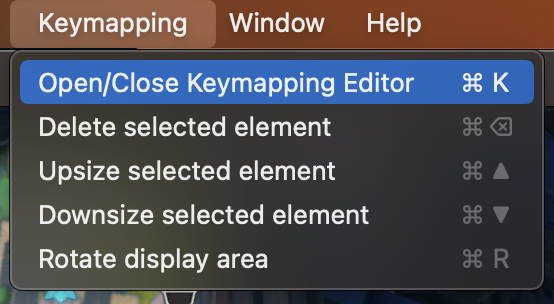
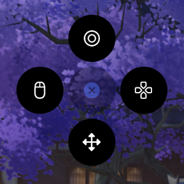
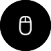

Using & Making Keymaps
Many apps and games already have full keymaps available on our Keymaps repository. Additionally, you can find them on the PlayCover Discord #keymapping channel.
Note: If you want to add or share keymaps, see Importing & Exporting Keymaps for more information.
Using Keymapping
Once you've finished importing or creating your keymap, you can toggle it on or off by pressing the option ⌥ key. Turning on keymapping will lock the cursor to the app window, but you can still switch to other apps you have open using trackpad gestures or keyboard shortcuts.
Creating & Editing Keymaps
You can open and close the Keymapping Editor while in app using command ⌘ + K or selecting it from the Menu Bar.
After opening the Keymapping Editor you can add a new button by clicking anywhere on the screen. A ring menu will appear around your cursor with different button types. You can click on them to add the type of input you want (see the tables below for details and usage).
Closing the Keymapping Editor will automatically save any changes you have made to the keymap.
Keymapping Editor button types
| Symbol | Button | Description |
|---|---|---|
| Circle | Adds a single key binding. Useful for pressing buttons on the UI. By default this will create a single button mapped to LMB (Left Mouse Button). | |
| Directional Pad | Adds an 8-way directional joystick, where Up, Down, Left, and Right are bound to keys (by default mapped to W A S D). Useful for movement joysticks. | |
| Directional Arrows | Adds an area for mouse input. Useful for camera control. Can be mapped to other keys to recreate draggable touchscreen aiming controls present in some games. | |
|  | Mouse | Adds a single button bound to mouse control similar to Directional Arrows. Useful for games that require 360-degree movement control instead of 8-way directional movement. |
Note: On legacy versions (prior to 2.0.0 or PlayTools 2.0.1) of PlayCover, there may be RB and LB button types for adding left and right mouse button input.
Keymapping Editor usage instructions
| Function | Input | Usage |
|---|---|---|
| Change button | Click on the button and press the key you want | Change the default button map to another key |
| Move button | Click on the button and drag it using your mouse cursor | Position the button into to match in-game controls |
| Delete button | Click on the button and press command ⌘ + delete | Removes the button from your keymap |
| Increase button size | Click on the button and press command ⌘ + ▲ | Increase the size of the button coverage area |
| Decrease button size | Click on the button and press command ⌘ + ▼ | Decrease the size of the button coverage area |
Bindable keys
Most keyboard keys can be mapped, including function keys and numeric keypad keys.
In some cases gaming mouse buttons may be mapped, but they will be recognized as the middle mouse button MMB.
All keys of controllers supported by Apple's Game Controller API may be bound. Joystick and D-Pad binding is not supported.
Note: Input that cannot be mapped includes:
fn,option,command,scroll,power button,eject, andvolume up,volume downandmuteif they are standalone keys.